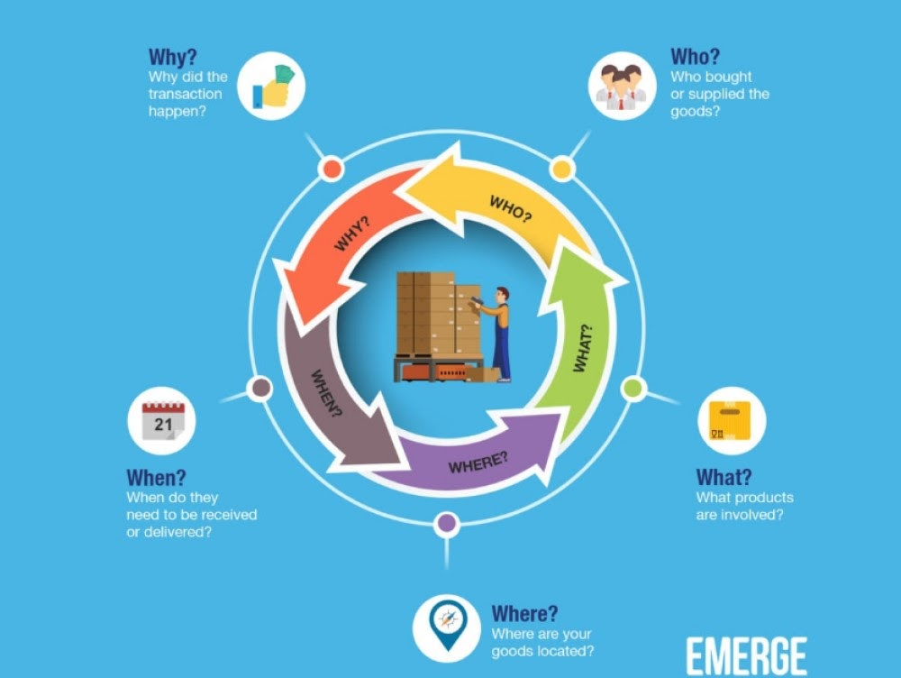

About Me
Hello there! I'm thrilled to welcome you to my corner of the web. My name is Aung, and I'm a passionate student web developer. I find immense joy in crafting captivating websites that not only look visually stunning but also provide seamless user experiences. Let me take a moment to share a bit about myself and what drives my enthusiasm for web development.
From a young age, I've been fascinated by the vast possibilities that the digital world offers. I was intrigued by how websites could connect people, provide information, and even shape businesses. This curiosity led me to dive headfirst into the world of coding and web development.
As a student, I've spent countless hours honing my skills and expanding my knowledge in various programming languages such as HTML, CSS, JavaScript, and more. I thrive on the thrill of solving complex problems and constantly pushing the boundaries of what I can achieve. With each project I undertake, I strive to create elegant, efficient, and user-friendly solutions that leave a lasting impact.
One of the aspects I love most about web development is the continuous learning journey it offers. The field is ever-evolving, and staying up-to-date with the latest trends, frameworks, and technologies is an essential part of my practice. I'm always eager to embrace new tools and techniques that can enhance my abilities and bring fresh perspectives to my work.
Collaboration is another crucial aspect of my development journey. I enjoy working with diverse teams, learning from others, and contributing my unique insights to create remarkable digital experiences. Effective communication and teamwork are skills I hold in high regard, as they are key to delivering successful projects that align with the goals and visions of my clients.
Beyond the technical side, I have a deep appreciation for aesthetics and user-centric design. I believe that a visually appealing website combined with an intuitive interface can engage and captivate users, leaving a memorable impression. I strive to create designs that not only meet the functional requirements but also evoke emotions and convey the essence of the brand or concept.
In addition to web development, I'm also enthusiastic about staying informed about the latest industry trends, attending webinars and conferences, and engaging in online communities. This enables me to expand my network, gain insights from industry professionals, and contribute to the larger web development community.
Ultimately, my goal as a student web developer is to create remarkable digital experiences that make a difference. I aim to empower businesses and individuals by leveraging my skills to bring their visions to life on the web. I'm excited about the endless possibilities and opportunities that lie ahead, and I can't wait to embark on this journey with you.
About This Project
Inventory is a simple web application that allows you to keep track of your inventory. You can add and delete items from your inventory.
Inventory is built using HTML, CSS, and JavaScript. It uses the DOM to dynamically render the web page.
Inventory uses JSON to store your inventory. This means that your inventory will persist even if you close the web page.